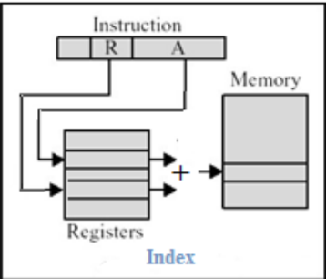

Distintas formas que tiene la arquitectura para especificar la ubicación de los operandos.
Objetivos:
- Reducir el número de bits para especificar un operando en memoria.
- Dar soporte a las estructuras de datos de alto nivel.
Pueden ser:
- Para datos, sobre los que opera la instrucción.
- Para instrucciones, especifica la dirección de la siguiente instrucción a ejecutar (en instrucciones de control).
2.4.1. Necesidades de direccionamiento
Dónde puede estar un operando:
- En la propia instrucción
- En un registro - En memoria
Direccionamiento por registro.
El campo de dirección especifica un registro donde está el operando.
Direccionamiento Inmediato.
El operando está en la instrucción.
Direccionamiento directo.
El campo de dirección contiene la dirección efectiva del operando.
Direccionamiento indirecto por registro.
Se especifica un registro donde está la dirección del operando.
Direccionamiento indirecto por memoria.
El campo de direcciones contiene la dirección de una palabra donde está la dirección del operando.

Direccionamiento base + desplazamiento.
Combina posibilidades del directo (facilidad de uso) y del indirecto por registro (menos bits para especificar dirección). Habrá que especificar un registro y un valor. La suma del contenido del registro y el valor es la dirección del operando.
Direccionamiento indexado.
La dirección del operando es la suma de dos registros.
